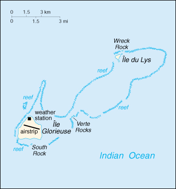

![[Country Flag of Glorioso Islands]](../flags/go-lgflag.jpg)
| Glorioso Islands |
|
       |  | |
| Geography |
Location: Southern Africa, group of islands in the Indian Ocean, northwest of Madagascar
Geographic coordinates: 11 30 S, 47 20 E
Map references: Africa
Area:
total:
5 sq km
land:
5 sq km
water:
0 sq km
note:
includes Ile Glorieuse, Ile du Lys, Verte Rocks, Wreck Rock, and South Rock
Area - comparative: about eight times the size of The Mall in Washington, DC
Land boundaries: 0 km
Coastline: 35.2 km
Maritime claims:
exclusive economic zone:
200 nm
territorial sea:
12 nm
Climate: tropical
Terrain: low and flat
Elevation extremes:
lowest point:
Indian Ocean 0 m
highest point:
unnamed location 12 m
Natural resources: guano, coconuts
Land use:
arable land:
0%
permanent crops:
0%
permanent pastures:
0%
forests and woodland:
0%
other:
100% (all lush vegetation and coconut palms)
Irrigated land: 0 sq km (1993)
Natural hazards: periodic cyclones
Environment - current issues: NA
| People |
Population: uninhabited (July 2000 est.)
| Government |
Country name:
conventional long form:
none
conventional short form:
Glorioso Islands
local long form:
none
local short form:
Iles Glorieuses
Data code: GO
Dependency status: possession of France; administered by a high commissioner of the Republic, resident in Reunion
Legal system: NA
Diplomatic representation in the US: none (possession of France)
Diplomatic representation from the US: none (possession of France)
Flag description: the flag of France is used
| Economy |
Economy - overview: no economic activity
| Transportation |
Ports and harbors: none; offshore anchorage only
Airports: 1 (1999 est.)
Airports - with unpaved runways:
total:
1
914 to 1,523 m:
1 (1999 est.)
| Military |
Military - note: defense is the responsibility of France
| Transnational Issues |
Disputes - international: claimed by Madagascar